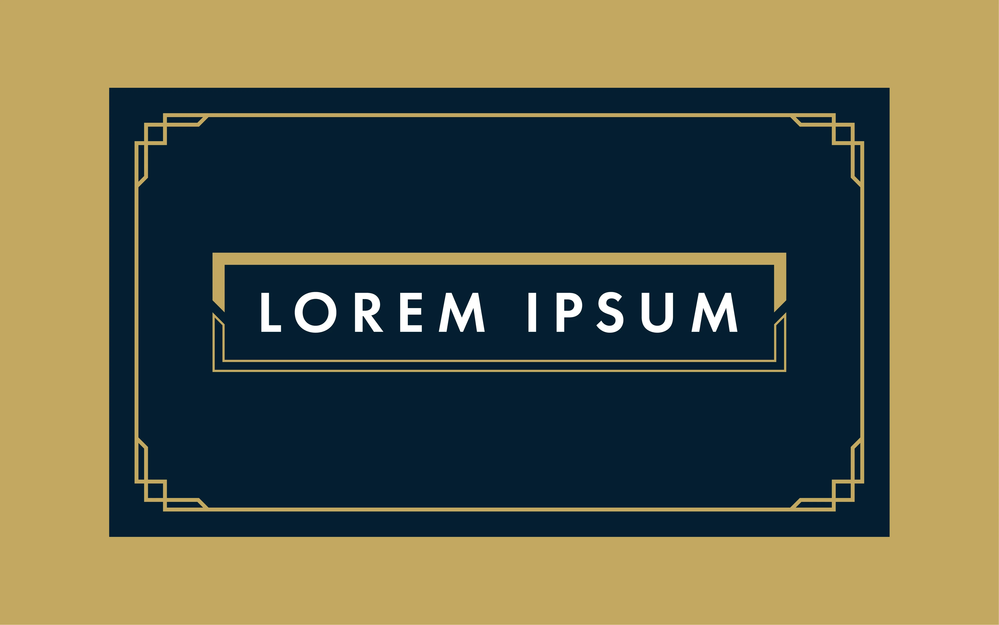

Minimalistički dizajn
Minimalistički dizajn naglašava jednostavnost, jasnoću i fokus na bitne elemente. Ovakav stil dizajna nastoji ukloniti sve nebitne elemente i smetnje, dok prioritet daje funkcionalnosti i korisničkom iskustvu. Rezultat uklanjanja nepotrebnih elemenata i fokusiranja na važne elemente je čist i nenatrpan izgled mrežne stranice.
